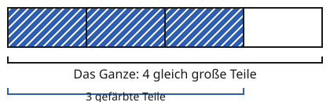
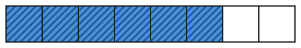

Brüche erweitern
Mit einem KI-Tutor lernen
Ein KI-Tutor erklärt dir diese Seite und hilft dir bei den Übungen. Wähl deinen Assistenten:
Mit Claude öffnen Mit ChatGPT öffnen Mit Mistral Vibe öffnen
Du nutzt dein eigenes Konto beim Anbieter. Der Assistent ist kein Angebot von lernapps.net: lernapps liefert nur Inhalte und Übungen. Die Wahl gilt für alle Seiten, nur auf diesem Gerät.
Einstieg
Eine Pizza ist in 2 gleich große Stücke geschnitten. Du isst 1 Stück, also der Pizza. Deine Freundin schneidet jedes Stück noch einmal durch. Jetzt sind es 4 Stücke, und du nimmst 2 davon. Du hast genauso viel gegessen wie vorher, nur sind die Stücke kleiner. Du hast gegessen. und sind verschiedene Schreibweisen für denselben Anteil.
Ausprobieren
Die zwei Streifen sind gleich lang, beide sind das Ganze. Oben ist der Anteil . Mit den Knöpfen wählst du eine Zahl, die Erweiterungszahl. Der untere Streifen wird dann in so viel mal mehr Teile geteilt. Die Teile werden feiner, und du färbst auch so viel mal mehr Teile. Beim Start ist die Zahl 1: Dann sind beide Streifen gleich. Probiere 2, 3 und 4 aus. Was ändert sich unten? Was bleibt gleich? Unter den Streifen steht die Rechnung.
Mit welcher Zahl erweiterst du?
Vorher: 2 von 3 Teilen gefärbt
Erweitert mit 1: 2 von 3 Teilen gefärbt
Das gefärbte Stück ist gleich groß geblieben: 2 von 3 Teilen sind so viel wie 2 von 3 Teilen.
Zwei gleich lange Streifen sind das Ganze. Oben sind 2 von 3 Teilen gefärbt. Unten wird mit einer Zahl erweitert, zum Beispiel mit 3: Der Streifen hat 9 Teile, 6 davon sind gefärbt. Das gefärbte Stück ist gleich groß: .
Regel
- Erweitern
Einen Bruch erweitern heißt, Zähler und Nenner mit derselben Zahl malzunehmen. Der Wert des Bruchs bleibt gleich.
Dabei ist die Erweiterungszahl (nicht null). Der Nenner wird mit malgenommen: Das Ganze wird in -mal so viele Teile geteilt. Der Zähler wird auch mit malgenommen: Du färbst -mal so viele Teile. Der gefärbte Teil ist gleich groß geblieben. Wichtig: Beide Zahlen mit derselben Zahl, und malnehmen, nicht addieren.
Beispiel
3/4 mit 2 erweitern
Zähler: 3 · 2 = 6. Nenner: 4 · 2 = 8. Also gilt .

Vorher. Das Ganze hat 4 Teile.
Quelle: eigene Zeichnung. Lizenz: CC-BY-4.0.
Erweitert mit 2. Das Ganze hat 8 Teile, das gefärbte Stück ist gleich groß.
Quelle: eigene Zeichnung. Lizenz: CC-BY-4.0.Übung
Übung
Drei Beispielaufgaben, jede mit ihrer Lösung:
Aufgabe Nr. 1
Du erweiterst mit 5. Wie heißt der neue Zähler?
Tipp
Zähler und Nenner werden mit derselben Zahl malgenommen.
Lösung
- Beim Erweitern wird der Zähler mit 5 malgenommen.
- Neuer Zähler: 3 · 5 = 15.
Richtige Antwort: 15
Aufgabe Nr. 2
Du erweiterst mit 3. Wie heißt der neue Zähler?
Tipp
Zähler und Nenner werden mit derselben Zahl malgenommen.
Lösung
- Beim Erweitern wird der Zähler mit 3 malgenommen.
- Neuer Zähler: 3 · 3 = 9.
Richtige Antwort: 9
Aufgabe Nr. 3
Du erweiterst mit 3. Wie heißt der neue Zähler?
Tipp
Zähler und Nenner werden mit derselben Zahl malgenommen.
Lösung
- Beim Erweitern wird der Zähler mit 3 malgenommen.
- Neuer Zähler: 2 · 3 = 6.
Richtige Antwort: 6
Übung
Drei Beispielaufgaben, jede mit ihrer Lösung:
Aufgabe Nr. 1
Du erweiterst mit 4. Wie heißt der neue Nenner?
Tipp
Der Nenner sagt, in wie viele Teile das Ganze geteilt ist.
Lösung
- Beim Erweitern wird der Nenner mit 4 malgenommen.
- Neuer Nenner: 3 · 4 = 12.
Richtige Antwort: 12
Aufgabe Nr. 2
Du erweiterst mit 6. Wie heißt der neue Nenner?
Tipp
Der Nenner sagt, in wie viele Teile das Ganze geteilt ist.
Lösung
- Beim Erweitern wird der Nenner mit 6 malgenommen.
- Neuer Nenner: 7 · 6 = 42.
Richtige Antwort: 42
Aufgabe Nr. 3
Du erweiterst mit 5. Wie heißt der neue Nenner?
Tipp
Der Nenner sagt, in wie viele Teile das Ganze geteilt ist.
Lösung
- Beim Erweitern wird der Nenner mit 5 malgenommen.
- Neuer Nenner: 5 · 5 = 25.
Richtige Antwort: 25
Übung
Drei Beispielaufgaben, jede mit ihrer Lösung:
Aufgabe Nr. 1
Der Bruch wurde erweitert. Es entstand . Mit welcher Zahl wurde erweitert?
Tipp
Mit welcher Zahl musst du den alten Nenner malnehmen, um den neuen zu bekommen?
Lösung
- Alter Nenner 3, neuer Nenner 15: 3 · 5 = 15.
- Der Zähler passt dazu: 2 · 5 = 10. Es wurde mit 5 erweitert.
Richtige Antwort: 5
Aufgabe Nr. 2
Der Bruch wurde erweitert. Es entstand . Mit welcher Zahl wurde erweitert?
Tipp
Mit welcher Zahl musst du den alten Nenner malnehmen, um den neuen zu bekommen?
Lösung
- Alter Nenner 3, neuer Nenner 6: 3 · 2 = 6.
- Der Zähler passt dazu: 1 · 2 = 2. Es wurde mit 2 erweitert.
Richtige Antwort: 2
Aufgabe Nr. 3
Der Bruch wurde erweitert. Es entstand . Mit welcher Zahl wurde erweitert?
Tipp
Mit welcher Zahl musst du den alten Nenner malnehmen, um den neuen zu bekommen?
Lösung
- Alter Nenner 5, neuer Nenner 20: 5 · 4 = 20.
- Der Zähler passt dazu: 3 · 4 = 12. Es wurde mit 4 erweitert.
Richtige Antwort: 4
Übung
Lösung
2/15
Hier wurde nur der Nenner malgenommen. Auch der Zähler muss mit 3 malgenommen werden.
5/8
Hier wurde 3 addiert. Beim Erweitern wird malgenommen.
6/15 richtige Antwort
2 · 3 = 6 und 5 · 3 = 15. Der Anteil bleibt gleich.
Zähler und Nenner werden mit derselben Zahl malgenommen, hier mit 3.
Mehr dazu:
Übung
Lösung
Richtige Antwort: Die Aussage stimmt.
Die Teile werden feiner, aber du färbst entsprechend mehr davon. Das gefärbte Stück ist gleich groß.
Mehr dazu:
Übung
Lösung
Richtige Antwort: Die Aussage stimmt nicht.
Man nimmt Zähler und Nenner mit derselben Zahl mal. Wer addiert, bekommt einen anderen Anteil. 1/2 und 2/3 sind zum Beispiel nicht gleich groß.
Mehr dazu: